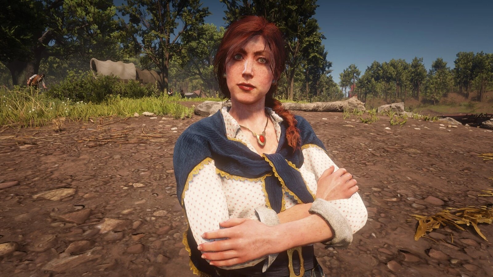
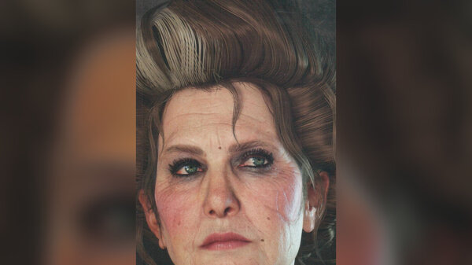
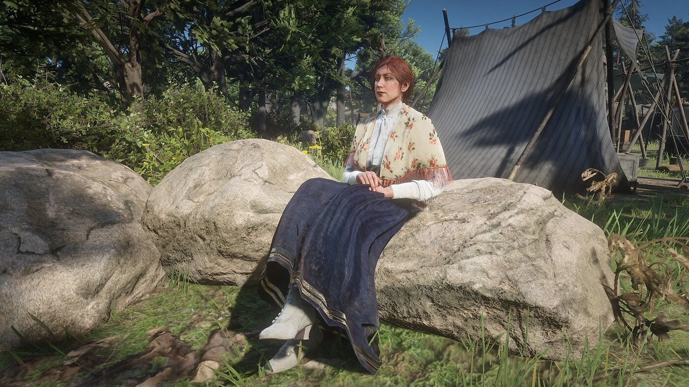

Character · Van der Linde gang
Molly O'Shea
Molly O'Shea is Dutch van der Linde's lover in Red Dead Redemption 2, an Irishwoman who left a comfortable life to be with the gang's leader. As Dutch grows colder and more distant, Molly becomes increasingly isolated in the camp.
Looked down on by some members and neglected by Dutch, her story ends in tragedy during the gang's time at Shady Belle.
- Died
- 1899
- Status
- Deceased
- Nationality
- Irish
- Affiliation
- Van der Linde gang
- Relationship
- Dutch van der Linde (lover)
- Games
- Red Dead Redemption 2
Biography
Dutch's companion
Molly joined the gang for Dutch and struggles with camp life. She does little of the daily work, is resented by some of the other women, and is increasingly ignored by Dutch as his schemes consume him.
A fatal outburst
Drunk and heartbroken at Shady Belle, Molly claims she told the Pinkertons about the Saint Denis bank job. Susan Grimshaw shoots her, and it later emerges that Molly had not actually betrayed the gang.
Personality
Molly is proud, passionate and lonely. She craves Dutch's attention and resents the camp's disdain, a combination that leaves her dangerously isolated as the gang's troubles mount.
Relationships

Dutch van der Linde
Her lover, whose growing neglect and coldness drive her isolation and, indirectly, her death.

Susan Grimshaw
The camp matriarch who shoots Molly after her false confession.

Arthur Morgan
A gang member who witnesses Molly's unravelling in the camp's final months.

Hosea Matthews
A gang elder who sees, like Arthur, how Dutch's choices are poisoning the camp around him.
Death and fate
Molly is killed at Shady Belle in 1899, shot by Susan Grimshaw after a false confession born of jealousy and despair rather than any real betrayal.
Behind the scenes
Molly appears in Red Dead Redemption 2 (2018). Her arc is one of the game's clearest portraits of how Dutch's growing coldness destroys the people closest to him.
Trivia
- She is Dutch van der Linde's lover.
- She is Irish and left a comfortable life for the gang.
- She is killed after falsely claiming to have informed on the gang.
Gallery
